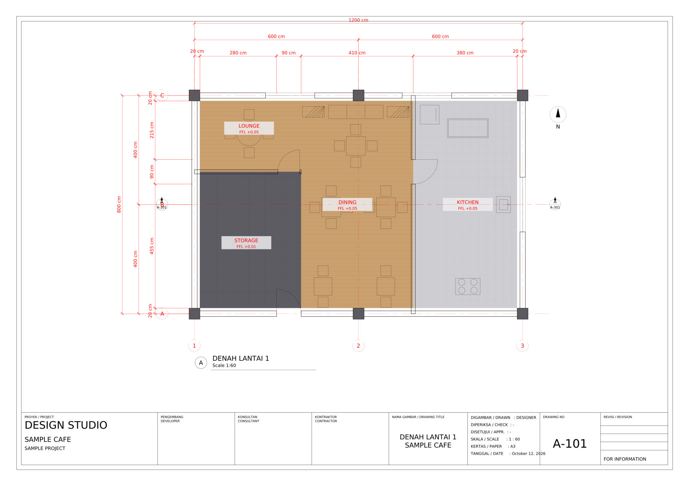
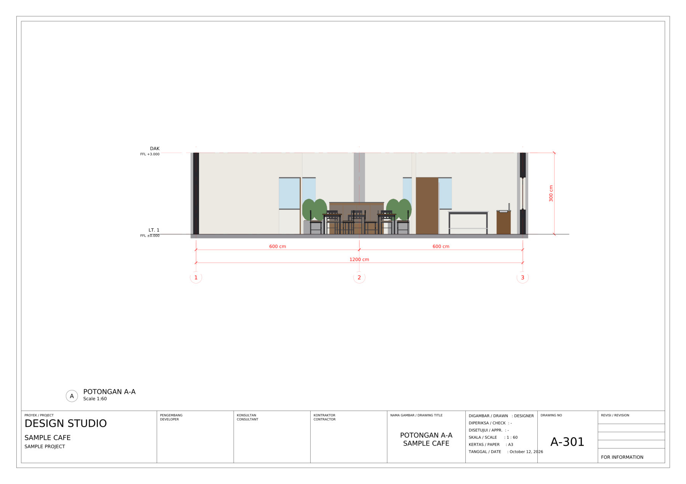
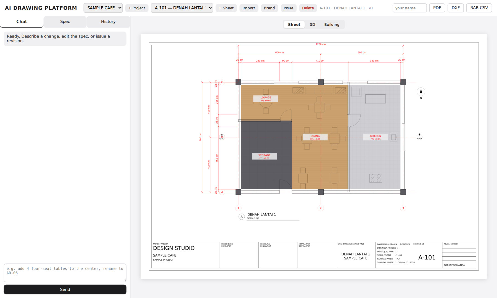
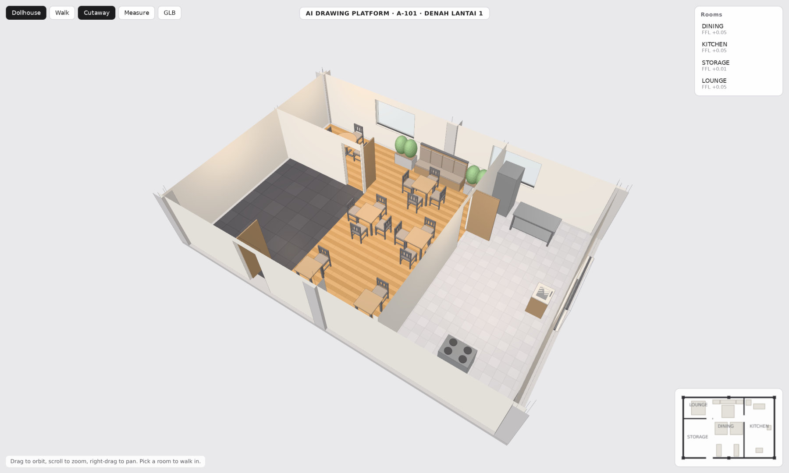
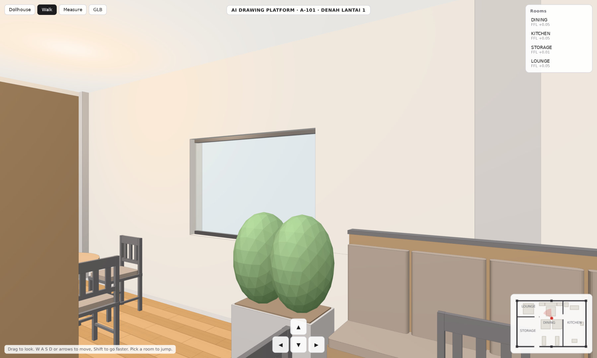
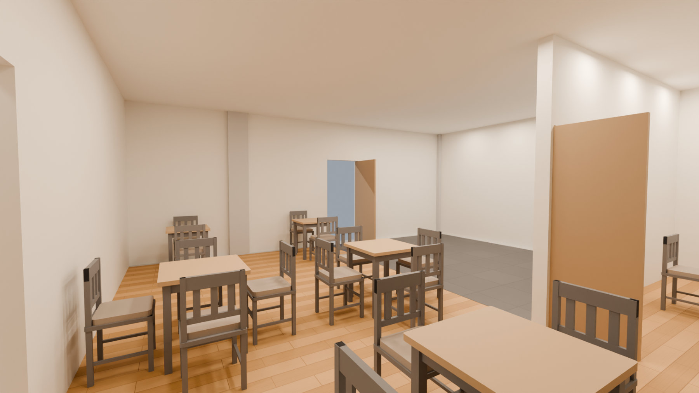
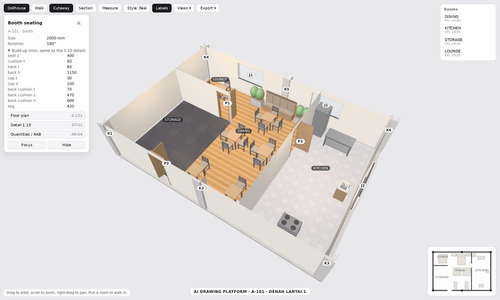
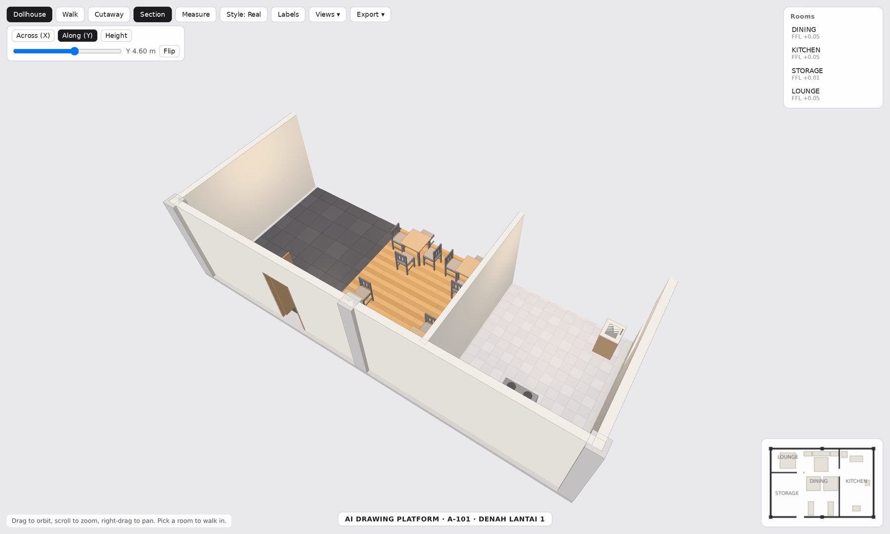
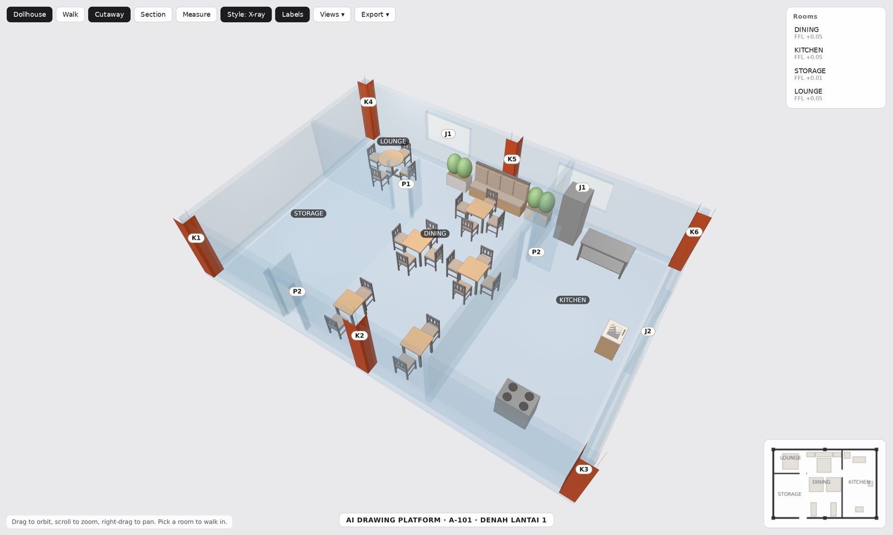
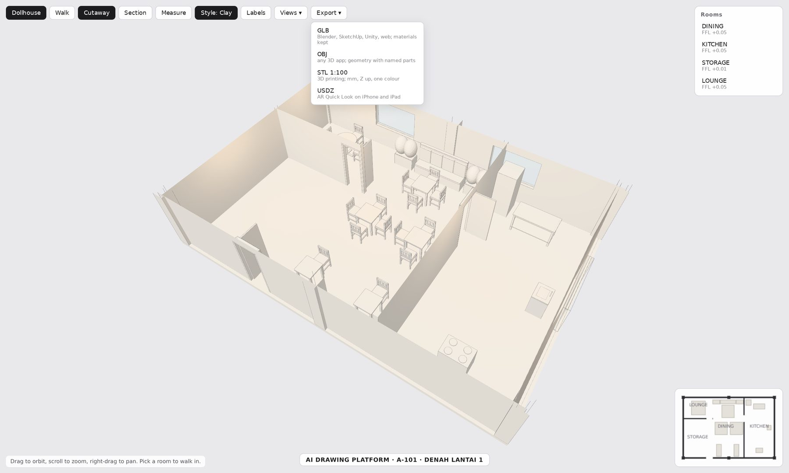

AI Drawing Platform for Architecture and Interior Design¶
Status: Ongoing | In use by a company's internal design team since July 2026: chat-driven working drawings, quantities and 3D walkthroughs from one spec
Executive Summary¶
An internal platform that produces working drawings (gambar kerja) for a design team that fits out food and beverage outlets. A designer describes what they want in chat; the platform returns exact, scaled sheets in the team's own title block as DXF, PDF and PNG, plus the quantities and a 3D walkthrough of the same space.
The rule that shapes everything: the model reasons, engines draw. Claude never draws a line. It reads the request and edits a structured JSON spec of the sheet. Deterministic engines then render every plan, section, schedule and 3D model from that spec, so scale and dimensions are always exact and every output agrees with every other.
Key Results¶
| Metric | Value |
|---|---|
| Sheet types | floor plan, finish plan, ceiling and lighting plan, electrical and plumbing points, section and elevation, interior wall elevation, door and window schedule, quantity take-off, drawing list |
| Real drawing set reproduced | all 15 A3 pages of a real outlet's set, transcribed and checked |
| Chat edit round trip | about 9 seconds on the server, about 17 seconds locally |
| PDF import | a real drawing page to an editable spec in about 16 seconds |
| 3D | glTF model per floor, stacked building view, browser walkthrough on a phone, click-to-inspect parts, section plane, export to GLB, OBJ, STL 1:100 and USDZ |
| Parametric furniture | 19 symbol types in 2D, detailed parametric 3D versions, models under ~700 KB |
| Codebase | ~6,800 lines of Python and JavaScript, 31 API routes, 29 sample specs, single engineer |
How It Works¶
flowchart LR
U["Designer in chat"] --> C["Claude edits the spec<br/>(validated, errors fed back)"]
C --> S[("Project spec<br/>one per floor")]
S --> D["2D engine<br/>plans, sections, schedules"]
S --> M["3D engine<br/>glTF model"]
S --> Q["Take-off<br/>quantities for the RAB"]
M --> W["Browser walkthrough"]
M --> R["Photoreal renders<br/>on a workstation"]- The spec is the single source of truth. Walls are centrelines with hosted doors and windows that break the wall where they sit, plus the grid, rooms with floor levels, furniture, finishes, ceiling heights, electrical and plumbing points and brand panels.
- Every edit is validated. If the model's edit breaks the schema, the errors go back to it once and it retries. Every edit becomes a version with an author and an audit trail, and can be restored. Issued revisions are written into the title block.
- One AI worker, queued. Chat and import run as background jobs with real progress stages (queued, editing, validating, retrying, rendering) shown live in the interface.
From the Working Drawing to 3D¶
A sample project made for this page, not a client design. Every image below comes from one spec.
1. The working drawing. Structural grid and columns, walls with hosted doors and windows, dimension chains, room labels with floor levels, furniture, a section marker, north arrow and title block, at 1:60.

2. The section, cut from the model. Nobody drew it: the engine cut the stacked 3D model along the marker on the plan and added level datums, grid and dimensions.

3. The platform. The designer works in chat (or edits the spec directly); every edit is a version with its history.

4. The same plan in 3D. A dollhouse view in the browser, with the room list and a live mini-map.

5. Walking inside. First-person at eye height, with wall and furniture collision; it also runs on a phone.

6. A photoreal render. Blender Cycles rendering the same model on a workstation, about two minutes on a laptop GPU.

The Model Explains Itself¶
A 3D view is easy to admire and hard to use: a client asks "how high is that bench?" and the answer is on a sheet nobody has open. So every element in the model knows what it is. The engine tags each piece of geometry with its part (a bar, a booth, a door, a column, a wall, a floor finish) and its real dimensions in millimetres, taken from the same spec as the drawings.
1. Click any part. The card shows its code, sizes and, for built-in furniture, the build-up: the same numbers the 1:10 detail sheet uses, read from one shared table, so the model and the detail cannot disagree. The buttons open the sheets that draw it: the floor plan, its detail and the quantities. Doors and windows carry their schedule codes (P1, J2) and columns their structural codes (K1 to K6); Labels puts all of them in the model.

2. Cut it anywhere. A section plane moves with a slider across the plan, along it or through the height, so a section can be explained in 3D before anyone reads the 2D sheet.

3. See the structure. X-ray makes the walls see-through and keeps the columns solid, which shows at a glance whether the furniture layout works around the structure. Clay mode turns everything white to judge the massing.

4. Take it anywhere. The model exports in the browser as GLB (Blender, SketchUp, Unity), OBJ, STL at 1:100 in millimetres for a 3D-printed presentation model, and USDZ to place it in the real room with AR on an iPhone. Camera presets give a top view and the four elevations for consistent presentation shots.

Engineering Decisions¶
Keep the model's output small¶
The first PDF import asked the vision call to read a drawing and also estimate coordinates for every room. That call hung for more than 300 seconds. Asking only for names returned in about 20 seconds. The import now has two steps: a bounded vision call (limited turns, read access to that one file) extracts a compact summary (title block, size, grid, room names and levels), and plain Python maps it to a spec and places the rooms on the grid for the designer to refine.
A clash checker the model has to satisfy¶
An early chat edit put a bar counter on the wrong wall and added seven duplicate stools. Now every furniture footprint, built from the same shapes as the 3D model, is tested against walls, columns, doorways, door swings, other furniture and the building outline. Clashes are fed back to the model for up to three attempts, and anything left is returned as a visible warning, never silently. The instructions state the orientation, the rotation per wall and the walkway rules.
Sections are cut, not drawn¶
Each floor sheet carries its level, and the floors stack into one building. A section or elevation stores only where to cut. The engine intersects the model with that plane for the cut faces, projects what lies beyond with a distance tint, and adds level datums, grids and dimensions. When a floor changes, every section re-cuts itself.
Views that follow their floor¶
Finish, ceiling, electrical and plumbing sheets are views of a floor sheet, not copies, so they redraw whenever the floor changes. Electrical and plumbing points (16 types, each with a default mounting height) live on the floor sheet itself, and the quantity take-off counts the same points.
Stable codes for doors and windows¶
Every door, window and open passage is grouped by type and given a code (P, J, B) kept in a per-project register, so a new size never renumbers codes already on issued drawings. Plans show the codes beside each opening and the quantities list openings by the same codes. Building this exposed a double count in the take-off, where a mezzanine sheet repeated its storey's openings; it was fixed at the source.
Proved on a real drawing set¶
A real outlet's 15-page set was transcribed: its plan linework was an embedded picture, so positions were calibrated on the vector grid at 1:60 and read from the dimension chains to about 5 cm. The clash checker then found seven transcription errors. After fixing them, every page of the set was reproduced from specs.
3D and Renders¶
Every floor plan also becomes a 3D model: walls extruded with real openings, lintels and sills, glass, door leaves matching the plan swing, floors textured per finish, columns, ceilings and parametric furniture. The browser viewer (three.js, no build step) offers a dollhouse view, first-person walking with collision, room-by-room jumps, a mini-map, a measure tool and a full-screen link that works on a phone. It also inspects any part, cuts the model with a movable section plane, switches between real, clay and x-ray styles, explodes the floors and the roof apart, and exports GLB, OBJ, STL and USDZ on the viewer's own device, so the shared server does no extra work.
Photoreal renders come from Blender Cycles rendering the same model. Measured on a laptop, a 1080p frame at 128 samples took 628 seconds on the CPU and 91 seconds on the integrated GPU. Rendering is deliberately kept off the shared company server, which runs business-critical systems; the server only serves the walkthrough, which runs on the viewer's own device.
Generative AI: Concepts Only¶
Image and video generators make convincing rooms but invent the geometry, so they cannot represent a design that someone will build. In this platform they are limited to optional, clearly labelled concept visuals made from the exact renders. Brand artwork is never generated: designers upload the real files, the spec references them by name, and a missing file shows as a grey board with a warning.
Roadmap¶
The same rule extends to more disciplines, each owning a section of the spec:
- Architecture and interior set: detail sheets at 1:5 and 1:10, unit prices on the quantities, width and egress checks, IFC export.
- Graphic design: signage and menus as print-ready artwork at real size, placed in the model and on elevations at that size.
- Cinematography: walkthrough films rendered from the exact model, with labelled concept clips on top.
- Structural pre-design: structural plans and preliminary checks, marked preliminary until a licensed structural engineer signs them.
Technology Stack¶
| Layer | Technology |
|---|---|
| AI | Claude via headless CLI, vision import, schema-validated spec edits |
| 2D engine | Python, ezdxf, matplotlib (DXF, PDF, PNG) |
| 3D engine | trimesh, shapely, glTF export |
| Viewer | three.js (no build step), vanilla JavaScript |
| Backend | FastAPI, background job queue, versioned file store with audit log |
| Renders | Blender Cycles on a workstation |
| Infrastructure | Docker Compose |
Built for a private client. The images show a sample project made for this page, not a client design; the company name, brands, outlets and locations are omitted throughout. Architecture, engineering decisions and metrics are described as built.